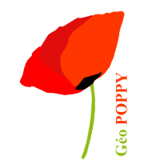
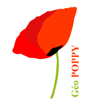

Offline viewing and editing spatial data for Forest Fire Defense
Feedback on the GeoPoppy solution
 


Michaël Douchin - 3liz
# Context
## Stakeholders, data, softwares
## Stakeholders
* **Valabre**: french public institution
* **Help and support actors**: prevent and fight natural risks (fire, flood, etc.)
* **Actions**: test new technologies, research, trainings, share services, tools and data.
* **Partners**: cooperation between several organizations in the French Mediterranean areas.

## History: consolidate data between partners
* **Data**: fire fighting infrastructure: water tankers, tracks, watchtowers + standardized grids + base layers
* **Harmonization and centralization** between actors:
* list of **layers** to share (name, metadata, ontology)
* agree on data structure (fields, constraints, etc.)
* create common glossary
* aggreement on data styling (symbols, colors, etc.)
* **Spatial extent**: French Mediterranean areas (125 965 km2)
* **Vectors** 200 Mo / **Rasters** 30Go
## Softwares already in use
* **QGIS** used by *Valabre* workers, but some actors also use Mapinfo/ESRI/Geoconcept
* **PostgreSQL** to store and process data:
* Dedicated server (hosted by 3liz)
* **Lizmap Web Client / QGIS Server** to publish web maps from QGIS


## Lizmap Web Client ?
* **QGIS projects published as full featured web maps**
* Lizmap QGIS plugin to configure the map
* Respects QGIS project properties: styling, layer tree, attribute table, form editing, printing via composers, relations between layers, etc.
* **Authentication and group rights**: restrict map access, editing tools, data export, etc.

## PostgreSQL Valabre database
* **One schema** per actor (administrative area) + schema dedicated for admins or auditing.
* **Rights managements** via GRANT on schemas and tables
* **Procedures, triggers and Python services**:
* default values,
* history audit,
* send emails to admins/users depending on data modification/validation,
* copy data accross local schemas and global schema

# Project objectives
## See and edit data offline
## mainly in the field
## Requirements and constraints
* **GIS features**: multiple layers, data editing, baselayers (aerial photos, dem), attribute table, etc.
* **Based on QGIS projects** to simplify the workflow & respect harmonized styling
* Use **PostgreSQL offline**: constraints, triggers, views (buffers, etc.)
* **No internet connection** or connection **not stable or expensive** -> work offline
* **Heavy datasets**
## Features requirements
* **Rich forms**: lists, checkboxes, images, date fields, etc.
* Authentication and rights management -> login saved in data
* **Tools**: data editing, attribute tables, popups, filters, relations, etc.
* **Synchronization**
* between the **offline database copies**
* and the **central server database**.
* No conflit resolution needed.
## Studied solutions / needs
* Windows tablets -> **Android tablets** (price)
* Simple field data collection tools (ODK) -> **QGIS based** mobile solution (full-featured)
* QField -> **GeoPoppy** (PostgreSQL, Auth, known solution)
Valabre chose to test **GeoPoppy**

# GeoPoppy
## Description / testing phase
## GeoPoppy
### A spatial server in a box
* **Hardware**: RaspberryPi / Battery / Tablet or smartphone or laptop with a web browser (Firefox)
* **Software**: Lizmap Web Client / QGIS Server / PostgreSQL / FTP Server.
* **Main conceptor**: **Julien Ancelin** with some help by 3liz
* Based on **Docker**
* **Already used** by researchers in France, Ivory Coast, Madagascar, etc.
## GeoPoppy cons
* **Additionnal devices**: *Do-It-Yourself look&feel*
* Tied to the **web browsers capabilities**: geolocation API, save files locally, etc.
* Lizmap interface is responsive but **not dedicated to mobile** -> some improvements needed
* Cannot connect to 3/4/5G and GeoPoppy WIFI **at the same time** -> **Android OS restriction**
## GeoPoppy pros
* **OpenSource software** and **affordable hardware**
* Work **offline**
* **No new software**: QGIS Server / Lizmap / PostgreSQL
* **Known worklow** to publish the web maps and data to the central server
* **PostgreSQL powered** : views, constraints, triggers.
* **QGIS Server powered**: all raster/vector formats (no conversion needed)
* **Lizmap powered**: authentication and rigths, rich forms from QGIS, atlas, styles, etc.
# Synchronization
## concepts and tools
## Synchronization key ideas
* Two phases
* **package** QGIS project & database from the central Lizmap/PostgreSQL server -> **deploy** to the GeoPoppy
* **Two-way db data sync** and **upload new media** to the server
* **No conflicts management** -> last action wins
* **UUID field** in every table: *c0558823-d20a-40c8-903c-0d8c4f4dad7d*
* Each GeoPoppy defined by its **unique UUID**
* On update, **only changed fields** data is synchronized
## Synchronization tools
* Based on **PostgreSQL triggers/functions**: *audit.sql* with additionnal sync procedures
* **Log every actions** with many information :
* initial raw data before change & changed fields,
* user and app names, timestamp,
* uuid of the source device, etc.
* **Centralize all audit** log in the main server
* **Sync process**:
* Get central server modifications
* Then send local modifications
## Example log for INSERT
```
event_id | 24
schema_name | dfci_vaucluse
table_name | VIG_Vaucluse
session_user_name | "geopoppy@valabre"
action_tstamp_tx | 2019-08-13 15:12:06.126626+02
action | I
row_data | "id"=>"47", "uid"=>"cb0344c4-c936-378a-2fae-96dd031a820b", "geom"=>"01010000206A08000023FDF38C15332B4118D448D97C035841",
"login"=>"j.doe|John|Doe|", "hauteur"=>"34", "nom_vig"=>"Vigie ", "service"=>"SDIS"
changed_fields |
sync_data | {"origin": "23e2218b-42cb-0963-eb25-8fe37cfeae50",
"replayed_by": {"2f9c2d17-fbb3-6cd2-2dbb-2b2738ba0029": "3a80a443-1338-722b-23c7-1751933fdd06"}}
```
## Example log for UPDATE
```
event_id | 16
schema_name | dfci_bouches_du_rhone
table_name | HBE_CONTROLE
session_user_name | "geopoppy@valabre"
action_tstamp_tx | 2019-07-26 16:51:57.265702+02
action | U
row_data | "id"=>"30", "uid"=>"b714709d-129b-6a97-fe89-21260604ba0c",
"geom"=>"01010000206A080000AAF1D24D4C2C2A415839B4282D005841", "user"=>"hbe",
"photo"=>NULL, "a_supp"=>"", "trappe"=>"inc", "date_creat"=>"2017-04-24",
"date_modif"=>"2017-04-24", "coordonnees_x"=>NULL, "coordonnees_y"=>NULL, "carroyage_dfci"=>NULL
changed_fields | "a_supp"=>"NON", "trappe"=>"NON", "date_modif"=>"2019-07-26", "page_atlas"=>"45", "nom_commune"=>"Aureille", "coordonnees_x"=>"4° 57.332'", "coordonnees_y"=>"43° 42.372'", "carroyage_dfci"=>"KD04F9"
"sync_data" | {"origin": "2c192051-2cc9-deda-fab7-f97e18b1caa6",
"replayed_by": {"2f9c2d17-fbb3-6cd2-2dbb-2b2738ba0029":
"acfc1373-60eb-74ff-4657-df1ffc73d8a0"}}
```
## Sync tools
### QGIS processing algs
* **A QGIS plugin** as a **Python processing provider**
* Use it in **QGIS desktop**: Processing menu with algs
* Use it **server-side**: 3liz WPS server async implementation based on QGIS processing framework
* Use it **in the GeoPoppy** device: via Lizmap
# Conclusion
## Feedback, roadmap, ideas
## Feedback
* **It works !**
* in the field,
* but also as an offline **portable full GIS server** (WMS, WFS, WPS, PostgreSQL, etc.)
* more tests needed and QGIS plugin not released yet
* **Simplify the workflow** : easier with good QGIS & PostgreSQL knowledge
* Improve **PyQGIS WPS Server** and **Lizmap WPS client**
* Complex QGIS projects can be **slow to render**
* **Lizmap responsive web interface** can be improved
## GeoPoppy on Android !
* No additionnal hardware devices needed: **only your Android device** thanks to UserLand
* Much **better performances**
* Use **3/4/5G** in the field: sync and display external layers (WMS, WFS, etc.)
* **PostgreSQL** running on Android -> can also be used with QField or Input
* **Almost production ready**: some work needed to package this solution, add doc, etc.
## Some links
* GeoPoppy: https://github.com/jancelin/geo-poppy/
* Julien Ancelin: https://twitter.com/complementterre/
* GeoPoppy on Android:
* Github: https://github.com/jancelin/geopoppy_android
* Video https://twitter.com/complementterre/status/1133836725137096705
* PostgreSQL Audit: https://github.com/Oslandia/audit_trigger/
* PyQGIS WPS Server by 3liz: https://github.com/3liz/py-qgis-wps
* PostgreSQL in UserLand: https://github.com/CypherpunkArmory/UserLAnd/issues/256
* Lizmap Web Client: https://www.lizmap.com/en/
Thanks for your attention